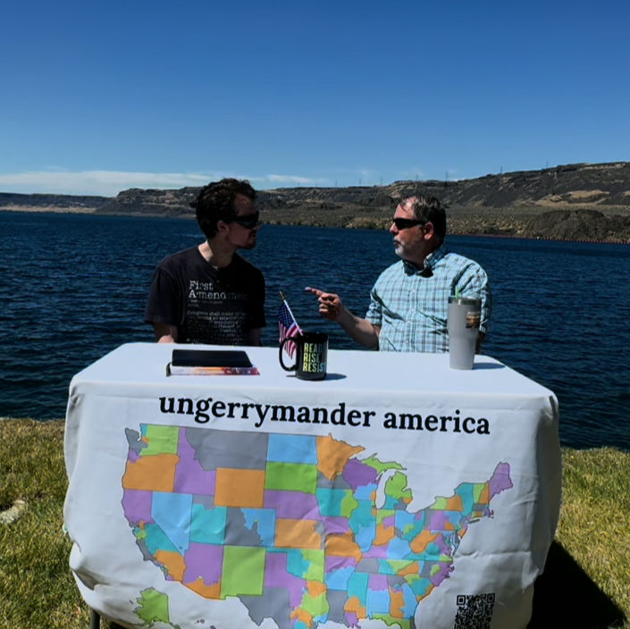
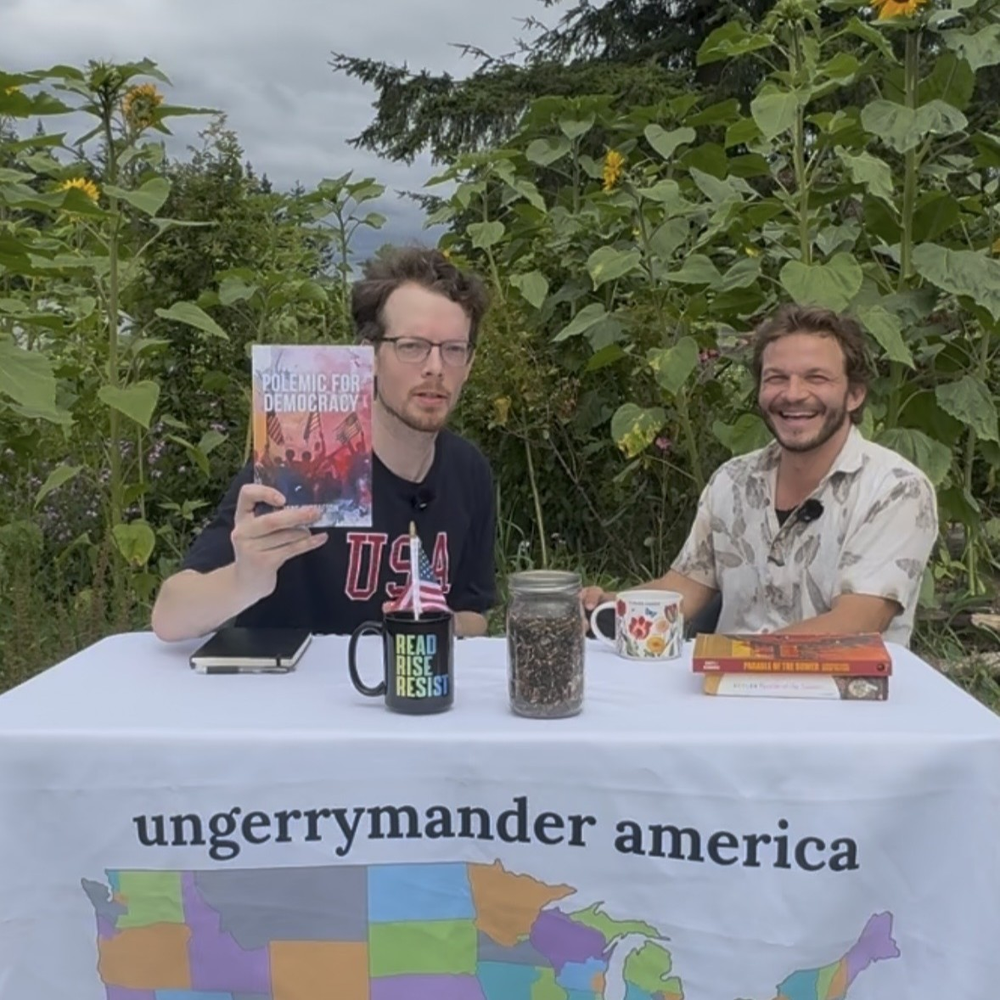
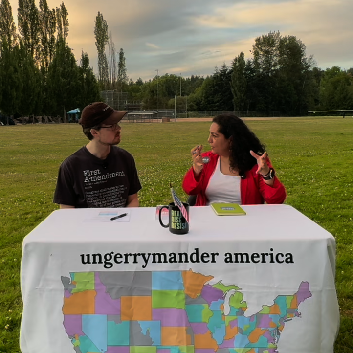
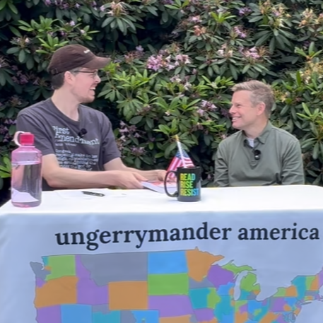
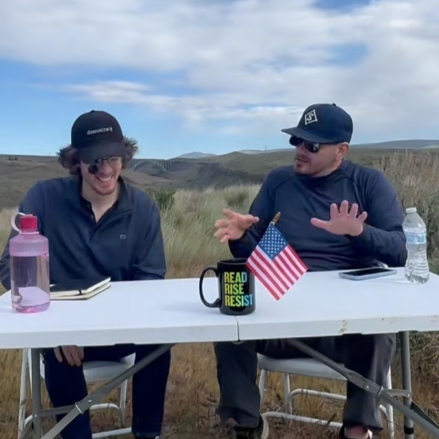
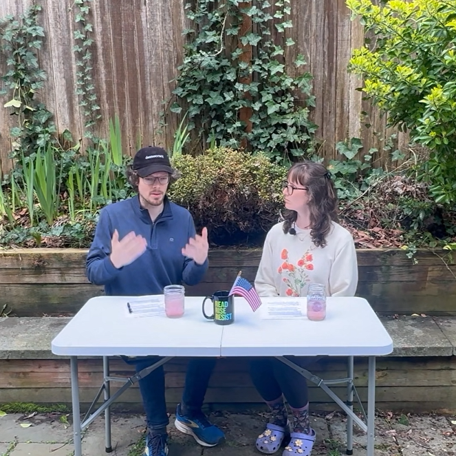
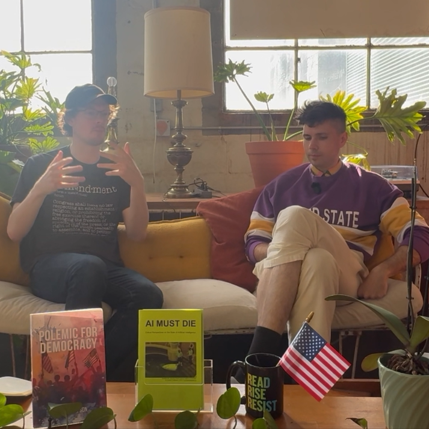

Episodes
Every episode is recorded in person. Each conversation explores a different system - political, economic, cultural, and beyond.

Patriotism and Systemic Corruption
A conversation about what it means to love your country while taking on the systemic corruption that holds it back.

Farming and Human Evolution
A deep look at farming, food systems, and how our relationship to the land shapes human evolution and culture.

Ranked Choice Voting
A conversation about ranked choice voting, how it works, and why it could be one of the most important reforms for fixing our broken electoral system.
American Empire at 250
A solo episode reflecting on American empire at the country's 250th anniversary, and what this milestone means for the systems we are trying to change.

The Legislative Process
Senate Majority Leader Jamie Pedersen joins the show to discuss the legislative process and what it looks like to work for change from within the system.
Challenging the Status Quo
Challenging the status quo is difficult, and I talk with a candidate making a case for moving to the left in Washington State.

Macroeconomics
America's macroeconomic situation is a product of decades of mismanagement, according to a former commodities trader.
Short Form Media Discourse
A conversation about how short form media shapes public discourse, political conversation, and our ability to engage with complex ideas.

Changing Your Mind
How difficult is it to change your mind? A conversation about personal political evolution and what it takes to genuinely update your beliefs.

"AI MUST DIE"
According to the author of popular zine "AI MUST DIE", after some point AI is really only useful for crime.
Listen on your favorite platform